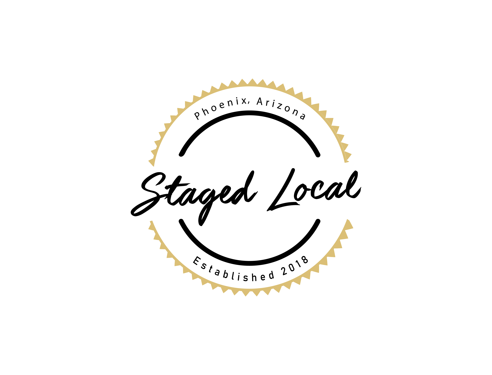

Family, veteran owned, local home staging company servicing the Valley. From traditional, contemporary, modern, farmhouse, industrial to ecletic styles. We will exceed your expectations in all your home staging needs. Having the experience in renovating and designing our own homes to put on the market gives us an edge to capture the eye of potential buyers and helps to sell your home fast for top dollar!
We have created a turn-key system for Real Estate Agents, Investors, and Home Sellers. Our goal is to help sell your listing quick and minimize your costs and time spent on market. Our extensive services include Home Selling Consultations, Interior Renovations, Home Staging and General Contracting. From start to finish, Staged Local will prepare your listing for the real estate market and ensure a quicker than average sale. Schedule a virtual consultation to see what services best fit your needs.
 Staged Local LLC From Staged to Sold